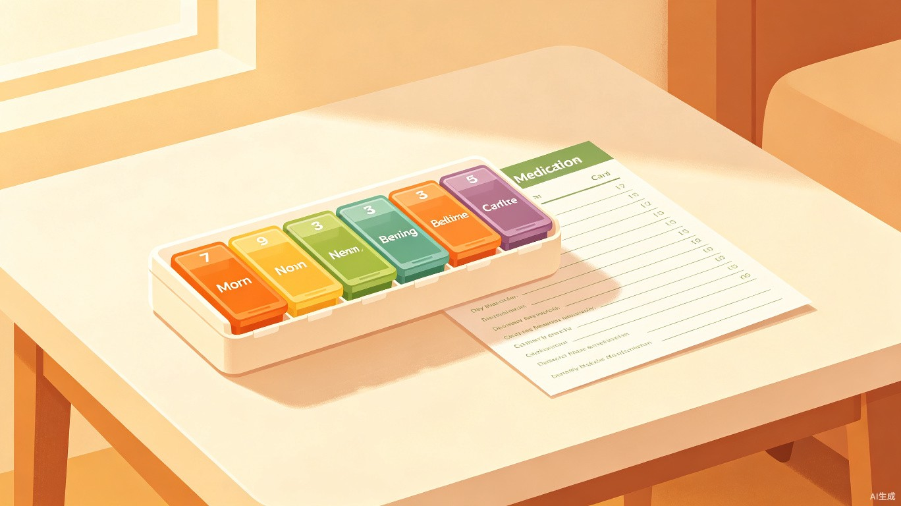
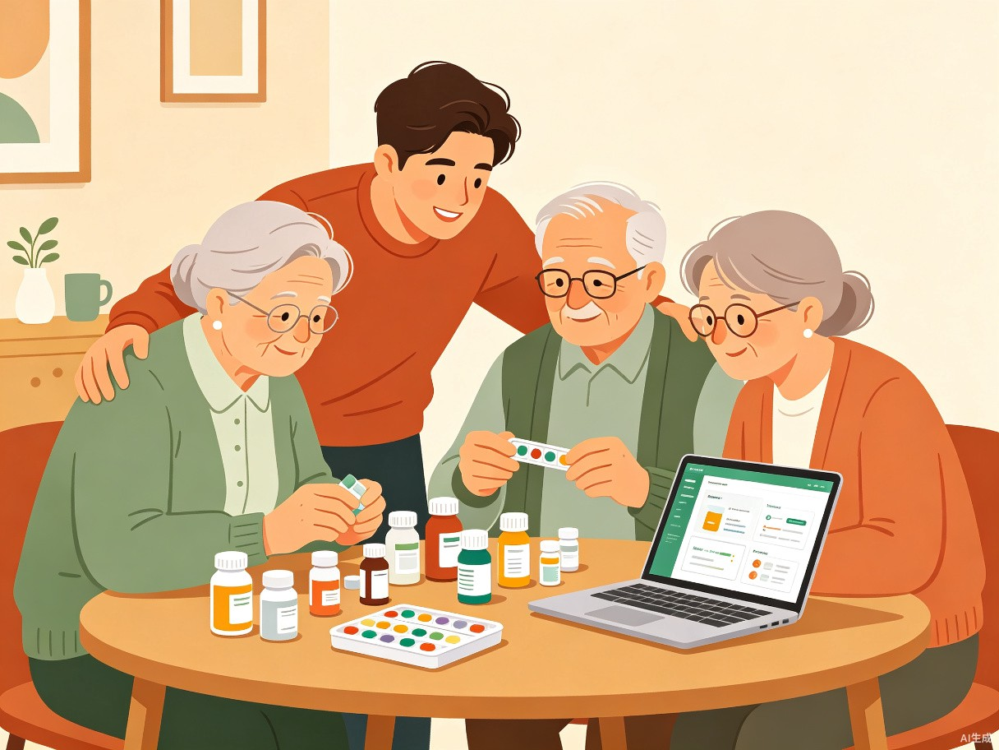
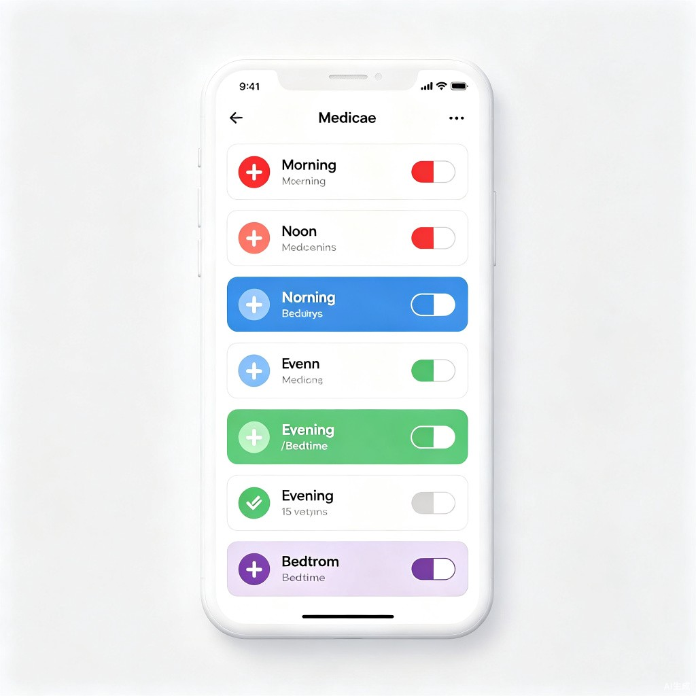

药盒管家
按复查周期一次性分好7~30天的药，让老人只需认颜色就能吃药

1 创意介绍
药盒管家是一款面向多药共服家庭的智能分药辅助工具。它的核心理念不是"让老人学会用手机App"，而是为子女生成一套看得见、摸得着的分装工具包——可打印的药盒标签、大字版服药卡、半粒药处理指引——老人只需要认颜色、看大字就能安全服药。
产品形态为 Web 应用，子女在网页端录入老人每日服用的药品清单（药名、剂量、频次），系统自动完成三件事：
- 检测药物间的不良相互作用与禁忌
- 按复查周期（7~30天可选）生成分装方案（早/中/晚/睡前，含半粒药处理指引）
- 输出可打印的分装标签和老人床头服药卡

2 目标用户及痛点
目标用户
直接用户：家中老人每天服用多种药物（5种以上）的成年子女，负责为老人分药、管理药品的家庭成员。
间接受益者：需要长期多药共服的老年人群体，尤其是视力下降、记忆力减退、行动不便的高龄老人。
核心痛点
当前市场上虽有药品管理App，但都要求老人自己操作手机，这与目标用户"不太会使用手机"的现实严重矛盾。药盒管家的根本区别在于：产品给子女用，产出物给老人用。
3 解决方案
核心使用流程
药名+剂量+频次
药物相互作用预警
7~30天×4时段/天
大字版+颜色编码
四大核心功能
按复查周期智能分装
录入药品后，子女可选择7天、14天、30天等周期（对应老人下一次复查时间），系统自动生成整个周期的分装总表。每个格子放什么药、放几粒、整粒还是半粒，一目了然。子女照着这份"样品"一次分完，下次复查前不用再操心。
颜色编码药盒标签
为药盒每个格子生成可打印的彩色标签，用颜色区分服药时段，老人只需认颜色。标签包含超大字号和直观图标。
半粒药处理指引卡
系统检测到需要半粒服用的药物后，自动生成掰药指引卡片，说明正确的掰药方式（如"沿刻痕掰开，不可碾碎"），打印后放在药盒旁。
老人床头大字服药卡
生成一张A4大小的服药卡贴在老人床头，如"吃完早饭后，吃红色标签格子里所有的药"，老人不需要认字，只需要认颜色。
颜色编码系统
分装周期说明
药盒管家的分装周期与老人的医院复查周期对齐。老人通常每7天、14天或30天去医院复查一次，每次复查后药物可能调整。因此：
- 复查当天：拿到新处方后，子女在药盒管家录入新药品清单
- 设置周期：选择7天/14天/30天（对应下次复查日期）
- 一次分装：系统生成完整周期的分装方案，子女一次分完
- 复查当天再更新：下次复查后如有药品调整，重新生成即可
这种"复查驱动"的设计，让分药行为与就医流程自然衔接，不会出现分装方案与实际用药不符的情况。
药盒分装示意（以7天为例）
以"15种药、每日4次服药"为例的一周分装方案

4 与现有方案的差异化
| 对比维度 | 现有药品管理App | 药盒管家 |
|---|---|---|
| 操作者 | 要求老人自己操作手机 | 子女操作，老人零门槛 |
| 输出形式 | 手机通知、电子提醒 | 可打印的实物标签和服药卡 |
| 老人使用门槛 | 需要会操作智能手机 | 认颜色即可，不需要任何电子设备 |
| 半粒药处理 | 通常不支持 | 掰药指引卡片，指导正确掰药 |
| 药物禁忌检测 | 部分支持 | 录入时自动检测，预警提示 |
| 分药效率 | 每次仍需人工对照 | 按复查周期一次分完，7~30天不用再操心 |
5 价值与意义
6 技术实现与开发计划
本项目使用 TRAE Work 作为核心开发工具，充分利用其 AI 辅助开发能力，实现快速原型构建。
技术栈
开发路线
核心MVP（Demo阶段）
药品录入页面 + 周期选择（7/14/30天）+ 分装方案生成 + 可打印的标签和服药卡。能在浏览器中完整体验从录入到打印的全流程。
完善功能（复赛阶段）
药物禁忌检测API接入、半粒药掰药指引库、多老人管理、分药历史记录、子女微信提醒通知。
7 创作者信息
我是非技术背景的普通子女，这个创意来源于我真实的家庭经历。我相信最好的产品不是来自想象，而是来自真实的痛点。感谢 TRAE Work 让没有任何编程基础的我，也能把这个想法变成现实。